Seychelles & Mauritius - Easter
We were very lucky to have an opportunity to spend five days in Mauritius and a week in the Seychelles, thoroughly exploring the island of Mahé
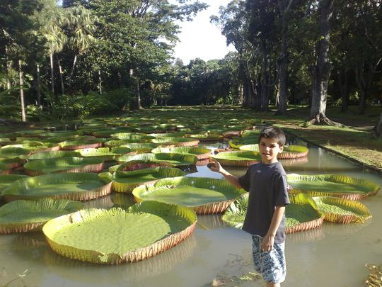
Water lilies in the world-famous Jardins des Pamplemousses..
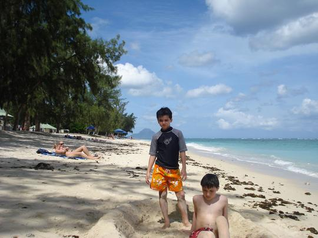
The beach at Flic-en-Flac - too much seaweed after bad weather
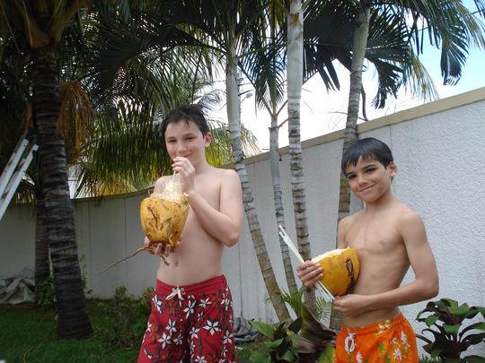
Our housekeeper in Mauritius cut the boys fresh coconuts
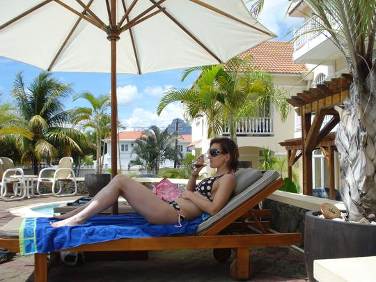
Who needs a luxury hotel? We like our apartment in a beautiful Mauritian villa...
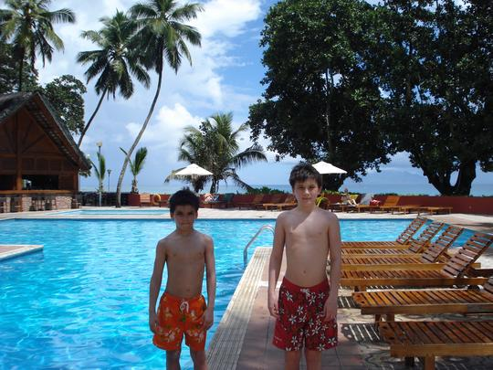
By the pool, Seychelles
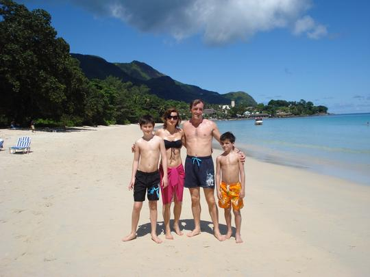
Beau Vallon beach on a perfect day
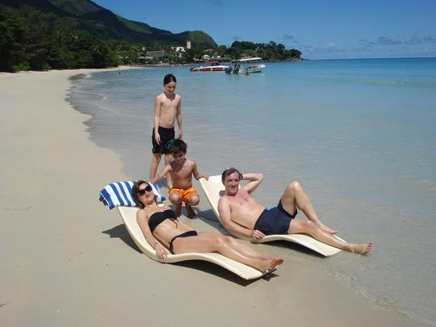
Supermodels relaxing on the beaches...
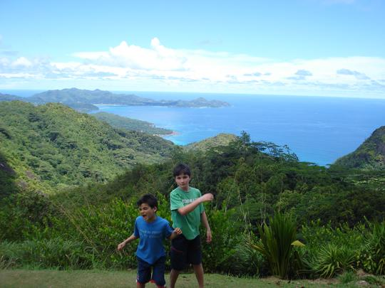
On top of Mahé
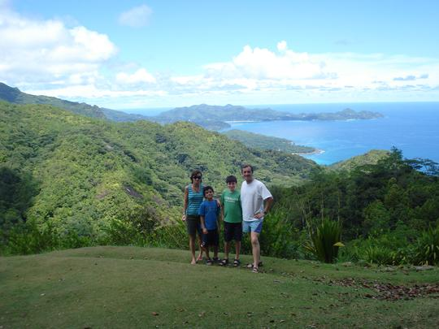
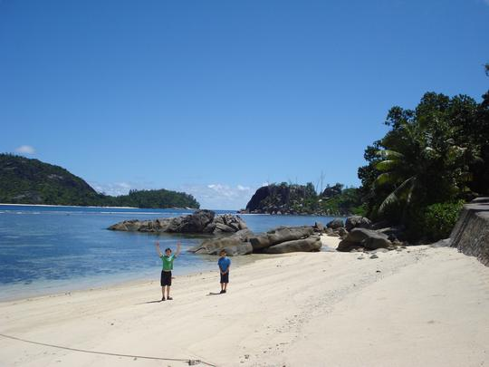
Yet another perfect beach...
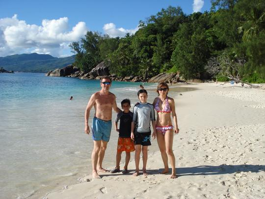
Anse Soleil, one of the top 3 beaches in the world...
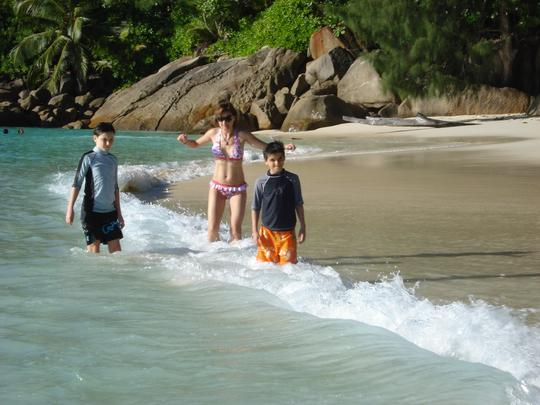
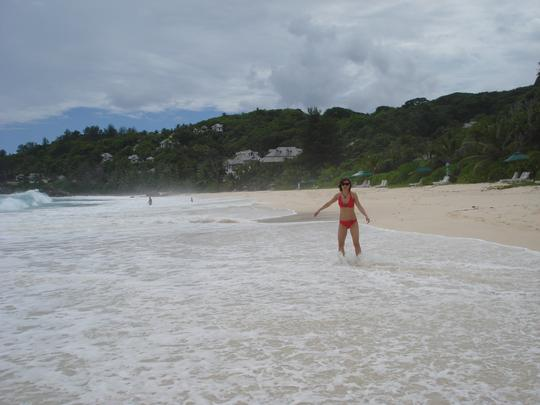
Intendance Bay - surf's up - 30 years after my Mum and Dad picnicked here...
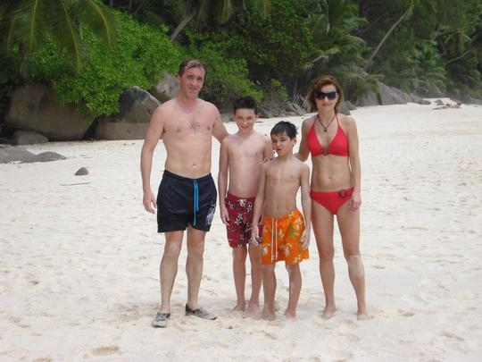
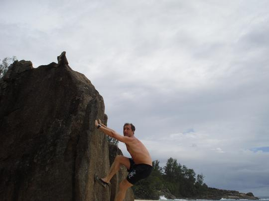
They even have free bouldering on the beach...
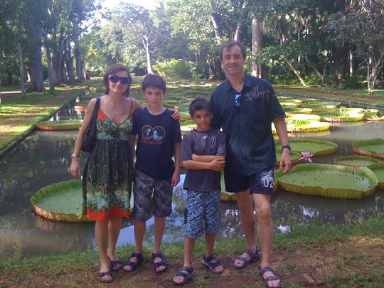
Mauritius - jardins des Pamplemousses